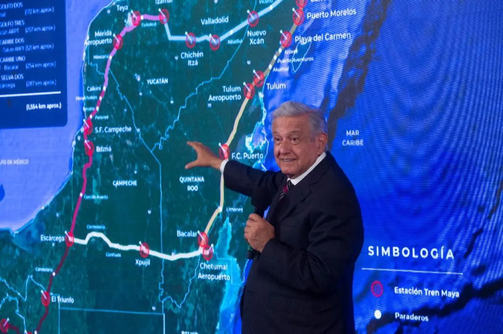

secciones


nacionales
El presidente López Obrador informó que cinco ejidos del tramo Xpujil-Chetumal se oponen a la construcción del Tren Maya, pues exigen ser indemnizados por obras de la carretera a Chetumal, construida a fines de los sesenta
el dedo en la llaga
programa dedicado al análisis de lo que acontence en méxico
en vivo
sígueno a través de las redes sociales
especiales 21
tren maya, la obra ferroviaria más importante en la actualidad
avanzamos en la construcción del Tren Maya, la obra ferroviaria más importante del mundo en la actualidad. Terminaremos los mil 550 kilómetros en diciembre de 2023. Como diría el ingeniero y general Vallejo: “No hay órdenes en contrario”.
la refineria madero
la refinería Madero, que estaba parada cuando llegamos al gobierno, ahora, después de invertirle 8 mil millones de pesos, está procesando 105 mil barriles diarios de petróleo. 1/2